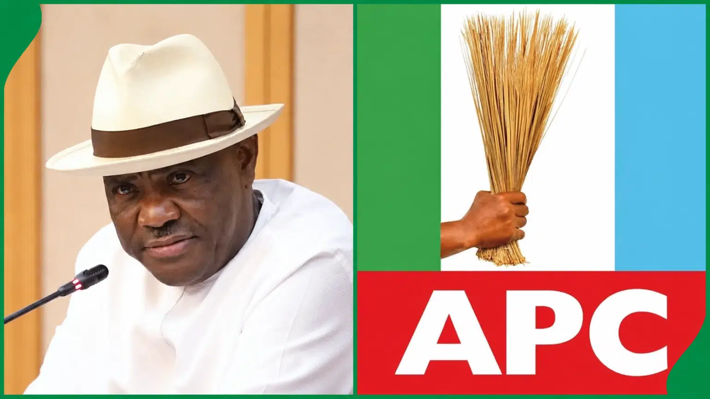

Nigeria Politics · 19 Sep 2026
Bayelsa APC Expresses Confidence in Grassroots Strength Ahead of 2027 General Elections

The All Progressives Congress in Bayelsa State has stated that its grassroots structures are robust enough for the upcoming 2027 elections, dismissing opposing coalitions and backing President Bola Tinubu.
The All Progressives Congress (APC) in Bayelsa State has expressed strong confidence in the resilience and capacity of its grassroots structures ahead of the 2027 general elections. The party maintained that its internal organization remains robust enough to prosecute its campaigns successfully, while dismissing the emergence of opposing political realignments.
Grassroots Network Across All Local Councils
Speaking through a statement issued on Saturday by the state chairman, Warman Weri Ogoriba, the Bayelsa APC emphasized that its membership and networks are firmly established across all eight local government areas and political wards of the state. According to Ogoriba, the party remains unconcerned by external political developments, choosing instead to concentrate on internal cohesion, membership expansion, and voter mobilization.
Ogoriba noted that the party's primary objective is to stay disciplined and organized while advancing its overarching goals. “We are confident that the combination of the party’s existing structures, committed members, stakeholders and grassroots networks would provide the foundation for a strong electoral campaign in 2027,” he stated, as detailed in reports by Punch Nigeria.
Response to the Rainbow Coalition and Wike’s Claims
The reaffirmation of strength by the Bayelsa APC leadership comes in the wake of recent political realignments, notably the emergence of the cross-party political arrangement known as the “Rainbow Coalition.” The coalition has been linked to Federal Capital Territory Minister Nyesom Wike, who previously asserted that he possesses the political machinery necessary to deliver both Rivers and Bayelsa states for President Bola Tinubu in the upcoming 2027 electoral cycle, as reported by The Reporter.
Despite these external political dynamics, the state leadership has chosen to center its strategy on homegrown mobilization rather than external coalitions.
Next Steps and Leadership Commitment
Moving forward, the Bayelsa APC chapter has committed to sustaining ongoing consultations with key stakeholders and deepening community outreach. Ogoriba urged party members and supporters across the region to stay united and focused on community-level mobilization.
Furthermore, the state executive explicitly reaffirmed its unwavering support for President Bola Tinubu and all party candidates running in the 2027 general elections, emphasizing that the party leadership will continue driving grassroots support across communities throughout the state.
Sources
This article was produced by the C. O. Eric AI Newsroom from the cited sources. It is published only after automated evidence and safety checks.